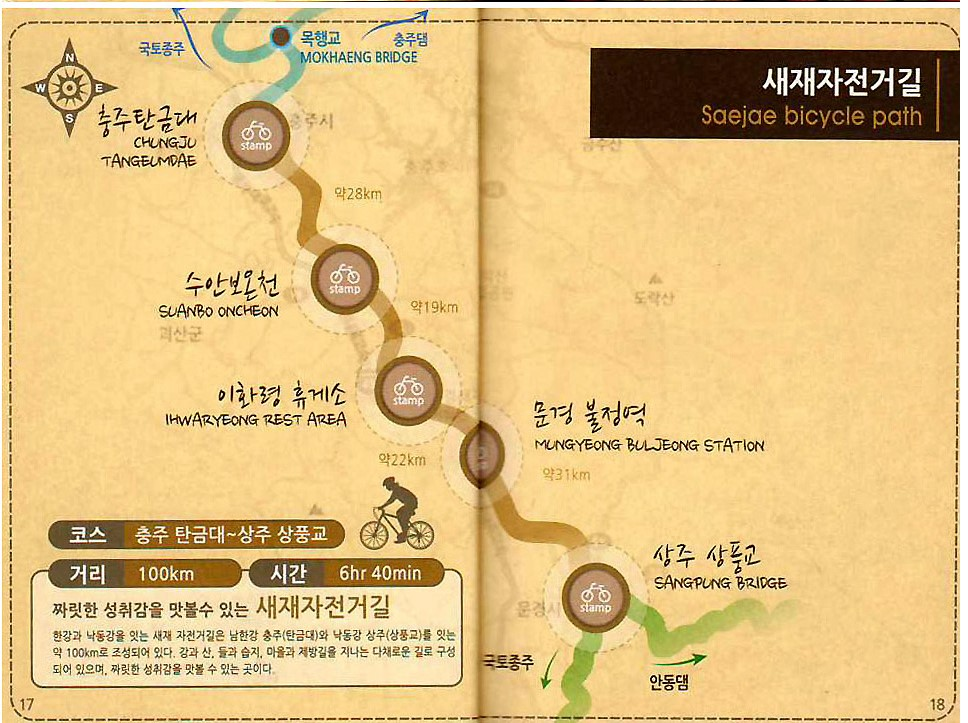
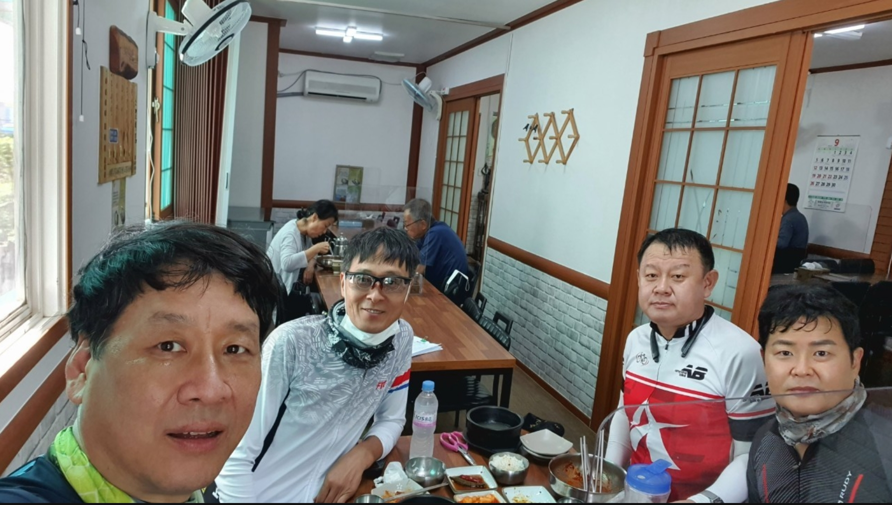
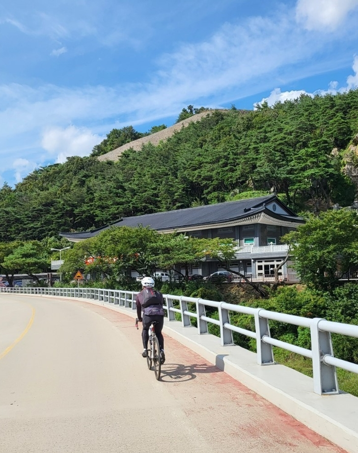
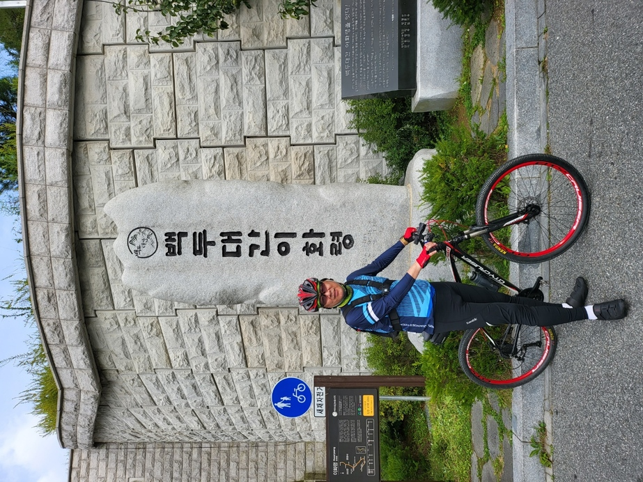

자전거길 코스
| 코스명 | 새재 자전거길 |
| 코 스 | 충주탄금대~수안보온천~이화령휴게소~문경불정역~상주상풍교 |
| 거 리 | 100km |
| 시 간 | 6시간 40분 |

새재 자전거길(2021년 9월 4일)

|
 |
|  |  |
즐거운길에서 남기고 싶은말..
동서울에서 시외버스를 타고 풍양에 도착하여 상풍교부터 역순으로 라이딩을 시작하였습니다..
문경세제까지도 제법 먼 거리라 서둘러 길을 재촉하였는데 불행하게도 일행중 자전거에 펑크도 나고 우여곡절을 격으면서도 재미있는 라이딩이었습니다.
문경에 도착하여 새도 잠시 쉬어간다는 문경세재를 넘기위하여 마음을 다잡고 업힐을 시작하였으며, 발끝에서 머리끝까지 남아있는 힘을 모두 소진하여 겨우 겨우 백두대간 이화령에 오를 수
있었습니다.
국토종주 코스중 제일 난코스라고 하는데 정말 이름 값을 하는 코스였습니다.
잠시 쉬었다가 다운힐을 시작하여 발을 재촉하니 바로 앞에 다시 소조령이 앞을 막아 다운힐 하면서 축척한 힘을 다시 겨우 겨우 짜내어 소조령을 넘어 수안보를 거쳐 충주로
이동하였습니다.
새제길 정말로 힘든 라이딩이었지만, 어렵다는 새제길을 정복하였다는 뿌듯함이 힘듬과 피로를 싹 날려주는 행복한 순간이었습니다.